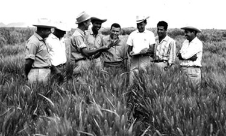

Dr. Norman Borlaug
The man who saved a billion lives

Dr. Norman Borlaug, third from the left, trains biologists in Mexico on how to increase wheat yields - part of his life-long war on hunger.
Here's a time line of Dr. Borlaug's life:
1914 - Born in Cresco, Iowa
1914 - Born in Cresco, Iowa
1914 - Born in Cresco, Iowa
1914 - Born in Cresco, Iowa
1914 - Born in Cresco, Iowa
"Borlaug's life and achievement are testimony to the far-reaching contribution that one man's towering intellect, persistence and scientific vision can make to human peace and progress."
-- Indian Prime Minister Manmohan Singh